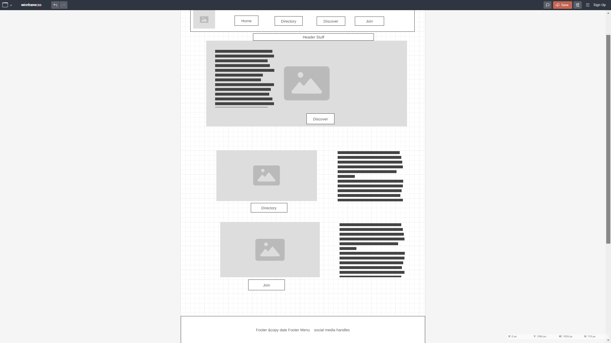
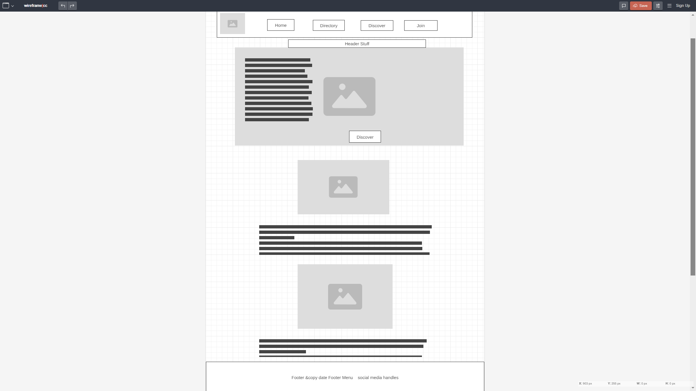

Site Name
Osun State Chamber of Commerce
A regional economic catalyst, leadership convener, and community champion providing aid and empowerment for members and associates.
Site Purpose
- Promote local businesses and economic development.
- Empowers associates through sensitization of best economic practices
- Protects members views, rights and privileges in the community
- Acts as an intermediary between the members, the community and the government
- Provide resources and networking opportunities for members.
Scenarios
- What events will the chamber be holding this month that promote business-to-business networking?
- Where can I find contact information for the chamber's board of directors?
- How can I be a member?
- What are the benefits of belonging to the Chamber
- What has been the population growth in the area?
Color Schema
Primary Color: ##55cbd3 (used for headings, buttons)
Secondary Color: ##07395f (used for backgrounds, accents)
Typography
Font for Headings: Arial, sans-serif
Font for Body Text: Roboto, sans-serif
Wireframe
This is a typical example of what the user interface might look like at production
Design may change over time to provide user with best experience on the site
Desktop View
Mobile View
